BASE KEEP
The Keep · The Diamond
Fun tape · not news
The X
MLB memes and shitposts pulled from X. Pictures when the wire carries them.
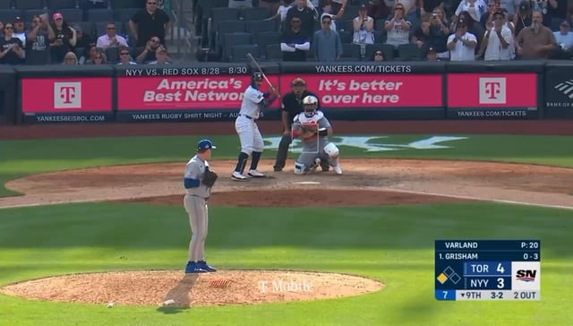
RedditLouis Varland gets the strikeout to close out the Jays win and get his 29th save of the year
submitted by /u/ichi_rui [link] [comments]
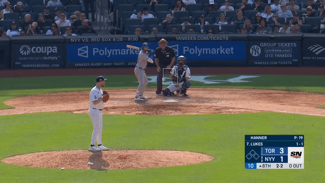
RedditNathan Lukes extends the Jays' lead to 3 with a solo home run for his 8th of the season
submitted by /u/Wild-Match4523 [link] [comments]
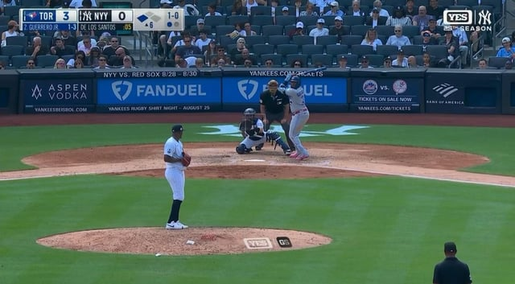
RedditJazz Chisholm Jr. with a nice over the shoulder basket catch to take a hit away from Vladimir Guerrero Jr. and hold the runner at third
submitted by /u/jmike1256 [link] [comments]
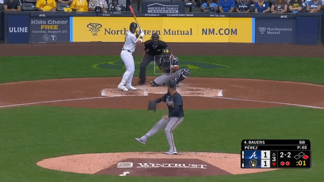
Reddit[Highlight] Jake Bauers treats Martin Perez's 12th pitch of the at bat by destroying it for a 2 run shot
submitted by /u/amatom27 [link] [comments]
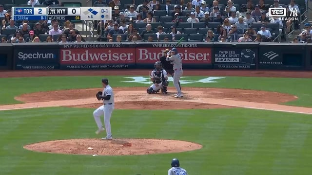
RedditRyan Weathers has left the game in the 4th inning accompanied by a trainer
submitted by /u/Goosedukee [link] [comments]
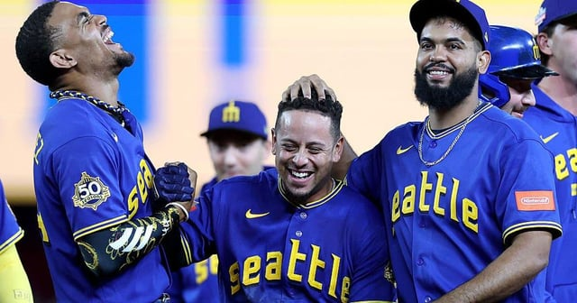
Reddit[Curtis Crabtree] Leo Rivas: "I was out for like two months (with vertigo). I couldn't even walk straight for a lot. But coming back and helping the team win a game it means a lot
submitted by /u/CruzKunTroll [link] [comments]
Reddit[Hogg] Just talked with Brandon Woodruff, who in a twist didn’t need surgery and will start throwing progression Wed. As he exhausted his options pre-surgery, 4-week scan showed un
submitted by /u/amatom27 [link] [comments]
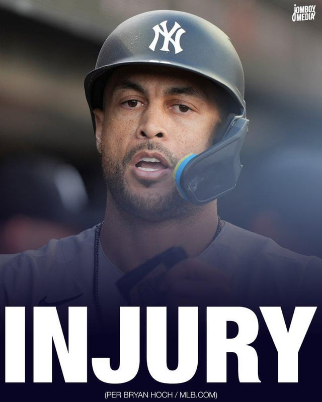
Reddit[Talkin' Yanks] Giancarlo Stanton might be out for the season after falling and injuring his other calf while running, per @BryanHoch
submitted by /u/Mg29reaper [link] [comments]
Reddit[Matheson] The Blue Jays are activating Vladimir Guerrero Jr. today, John Schneider says. They want to see how Andrés Giménez feels pre-game first before they decide on a counter m
submitted by /u/T_Raycroft [link] [comments]
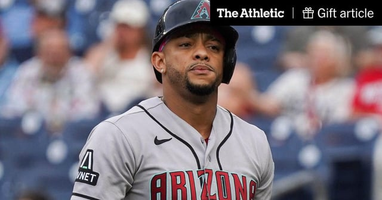
Reddit[Carig] Ketel Marte ‘free to do whatever’ after being seen at casino during game, Torey Lovullo says (Gift Article)
submitted by /u/Knightbear49 [link] [comments]
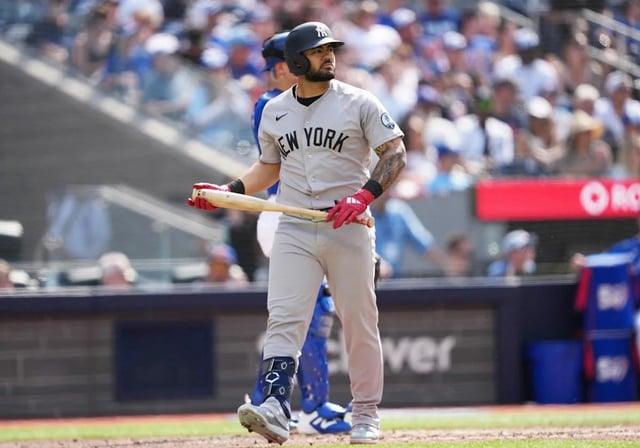
RedditYankees' Jasson Dominguez Plans are Imploding in Real Time
submitted by /u/AFC-Wimbledon-Stan [link] [comments]
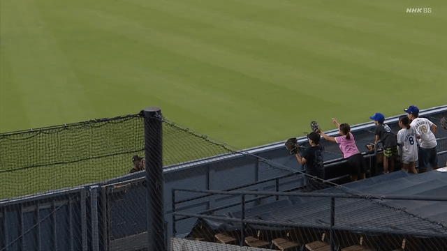
RedditGirl tears up after receiving a ball from Oneil Cruz
submitted by /u/kktst [link] [comments]
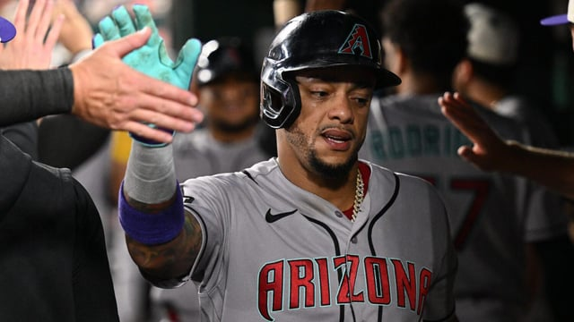
Reddit[Arizona Sports] Ketel Marte at casino for hours Friday night while Diamondbacks hosted Reds
submitted by /u/Spiritual-Dog160 [link] [comments]
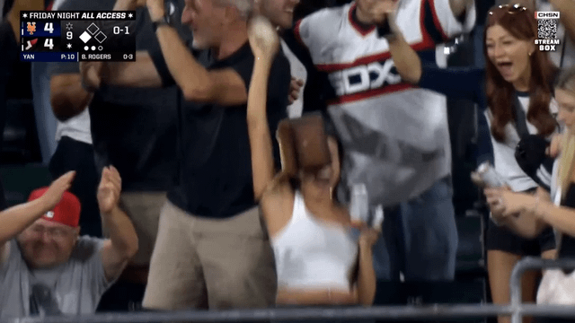
Reddit[Lowlight] The girl that caught Jake Rogers' walk off home run loses almost all of her stuff
submitted by /u/PopeSouthpaw [link] [comments]
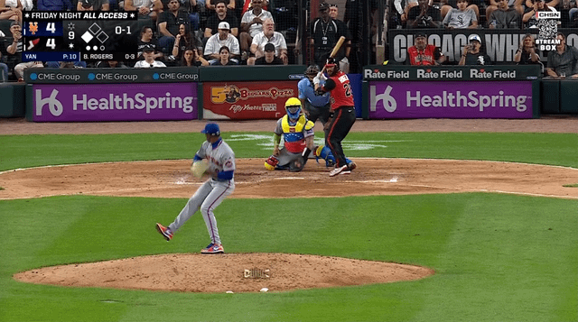
RedditJAKE ROGERS WALKS OFF THE METS ON A 2 RUN HOMER
submitted by /u/PopeSouthpaw [link] [comments]
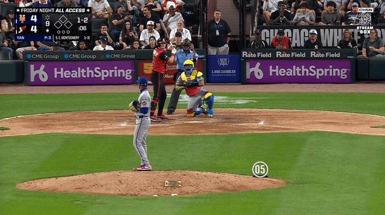
RedditJefry Yan leaps, it is ball 2
submitted by /u/PopeSouthpaw [link] [comments]
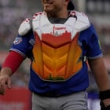
RedditAlejandro Kirk's custom gear for Players' Weekend pays homage to Toronto and Tijuana
submitted by /u/MLBOfficial [link] [comments]
 x.com
x.comThe WARmonger (@TheWARmonger_) / Posts
The WARmonger (@TheWARmonger_) / Posts x.com
 x.com
x.comInstant Meme: The Fernando! - Grand-slam thief - 2-Dingers - The stare #MLB
Instant Meme: The Fernando! - Grand-slam thief - 2-Dingers - The stare #MLB x.com
 x.com
x.comThe Spider-Man meme lives on 😂 See Spider-Man: Brand New Day now playing in theatres #Mets #JuanSoto #MrMet
The Spider-Man meme lives on 😂 See Spider-Man: Brand New Day now playing in theatres #Mets #JuanSoto #MrMet x.com
 x.com
x.comI was watching sports (MLB, WNBA) more than the debate, but this JD Vance screenshot went a bit viral and I can't stop thinking about its similarity to the Justin Timberlake meme
I was watching sports (MLB, WNBA) more than the debate, but this JD Vance screenshot went a bit viral and I can't stop thinking about its si
 x.com
x.comYiliang Peng (@Doublelift1) / Posts
Yiliang Peng (@Doublelift1) / Posts x.com
 x.com
x.comFalcons Esports (@FalconsEsport) / Posts
Falcons Esports (@FalconsEsport) / Posts x.com
 x.com
x.comSeems more likely to meet their timetable than MLB.
Seems more likely to meet their timetable than MLB. x.com
 x.com
x.comJust finished my NCAA bracket
Just finished my NCAA bracket x.com
 x.com
x.comIn baseball, greatness comes in all sizes
In baseball, greatness comes in all sizes x.com
 x.com
x.comSTOP STOP #Royals THEY'RE ALREADY DEAD R.I.P. #Mets
STOP STOP #Royals THEY'RE ALREADY DEAD R.I.P. #Mets x.com
 x.com
x.comIT HAPPENED! IT HAPPENED. Switch hitter vs Switch pitcher!! Pat Venditte's debut!!! HERE >>> tinyurl.com/njh6dwg
IT HAPPENED! IT HAPPENED. Switch hitter vs Switch pitcher!! Pat Venditte's debut!!! HERE >>> tinyurl.com/njh6dwg x.com
 x.com
x.comThis guy leads MLB with a .402 batting average! .
This guy leads MLB with a .402 batting average! . x.com
 x.com
x.comPrince Fielder traded to the #Rangers! .
Prince Fielder traded to the #Rangers! . x.com
 x.com
x.comJohnny Manziel suspended for half a game? #MLB needs to teach the #NCAA a thing or two!
Johnny Manziel suspended for half a game? #MLB needs to teach the #NCAA a thing or two! x.com
 x.com
x.comaint THIS true
aint THIS true x.com
 x.com
x.comNew profile pic for MLB Memes? #MattHarvey 1,000 RETWEETS and we change it!
New profile pic for MLB Memes? #MattHarvey 1,000 RETWEETS and we change it! x.com
 x.com
x.comBad Luck Sammy Sosa. #mlbmemes
Bad Luck Sammy Sosa. #mlbmemes x.com
 x.com
x.comChoking Symbols have been updated for Georgetown #mlbmemes #marchmadness
Choking Symbols have been updated for Georgetown #mlbmemes #marchmadness x.com
 x.com
x.comBigger torture? Astros or Nickelback? #mlbmemes
Bigger torture? Astros or Nickelback? #mlbmemes x.com